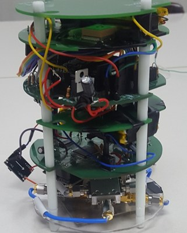

연구 분야
캔 위성 제작

개요
캔위성(Cansat)은 1998년 스탠퍼드대학의 로버트 트윅스(Robert Twiggs) 교수에 의해 제안된 교육용 위성모사 프로그램에서 사용한 위성이다. 위성의 역할을 모사하는 구조계, 전력계, 데이터처리계, 통신계, 탑재체 등의 기능을 음료수 캔 내에 구현한 데서 명명(Can+satellite)의 유래를 찾을 수 있다. 발사 및 임무운용에 필요한 위성구성요소를 매우 단순하게 구성하여 고공에서 짧은 시간 동안 위성처럼 운용하는 것이 특징이다. 캔위성 경연대회는 위성임무를 모사하는 캔위성을 설계, 제작, 시험하는 창의적 과학체험 활동이다.
세부 연구
대회 목적
위성임무를 모사하는 캔위성 경연대회를 통해 인공위성 체계에 대한 학생들의 이해를 증진하고 위성교육 및 위성기술을 대중화한다. 캔위성을 설계, 제작, 시험하는 창의적 과학체험 활동을 통해 스스로 부여한 탑재체 임무를 해결해 나가는 과학문제 해결능력을 함양하고 창의적 과학문화를 확산한다. 초소형 캔위성 경연대회를 통해 우주기술 체험을 홍보하고 우주기술 꿈나무를 육성하며 우주기술 저변을 확대한다. 유럽, 미국, 일본 등 해외 캔위성 국제 경연대회로의 관심을 증진하고 해외 대회 참여를 활성화하며 우주분야 민간 국제 교류를 확대한다.